[翻译] InnoDB中的页合并与分裂
原文标题：InnoDB Page Merging and Page Splitting
原文链接：https://www.percona.com/blog/2017/04/10/innodb-page-merging-and-page-splitting/
作者：Marco Tusa
译者：2014BDuck
翻译时间：2019-12-22
如果你找过任何一位MySQL顾问，问他对你的语句和/或数据库设计的建议，我保证他会跟你讲主键设计的重要性。特别是在使用InnoDB引擎的情景，他们肯定会给你解释索引合并和页分裂这些。这两个方面与性能息息相关，你应该在任何设计索引（不止是主键索引）的时候都将他们考虑在内。
你可能觉得这些听起来挺莫名其妙，没准你也没错。这不是容易的事，特别是讲到关于内部实现的时候。通常你都不会需要处理这些事情，并且你也不想去着手他们。
但是有时候这些问题又是必须搞清楚的。如果有这种情况，那这篇文章正适合你。
我尝试用这篇文章将一些最不清晰、InnoDB内部的操作解释清楚：索引页的创建、页合并和页分裂。
在InnoDB中，数据即索引（译注：索引组织数据）。你可能听过这种说法，但它具体是什么样的？
文件表（File-Table）结构
假设你已经装好了MySQL最新的5.7版本（译注：文章发布于17年4月），并且你创建了一个windmills库（schema）和wmills表。在文件目录（通常是/var/lib/mysql/）你会看到以下内容：
ta/
windmills/
wmills.ibd
wmills.frm
这是因为从MySQL 5.6版本开始innodb_file_per_table参数默认设置为1。该配置下你的每一个表都会单独作为一个文件存储（如果有分区也可能有多个文件）。
目录下要注意的是这个叫wmills.ibd的文件。这个文件由多个段（segments）组成，每个段和一个索引相关。
文件的结构是不会随着数据行的删除而变化的，但段则会跟着构成它的更小一级单位——区的变化而变化。区仅存在于段内，并且每个区都是固定的1MB大小（页体积默认的情况下）。页则是区的下一级构成单位，默认体积为16KB。
按这样算，一个区可以容纳最多64个页，一个页可以容纳2-N个行。行的数量取决于它的大小，由你的表结构定义。InnoDB要求页至少要有两个行，因此可以算出行的大小最多为8000 bytes。
听起来就像俄罗斯娃娃（Matryoshka dolls）一样是么，没错！下面这张图能帮助你理解：
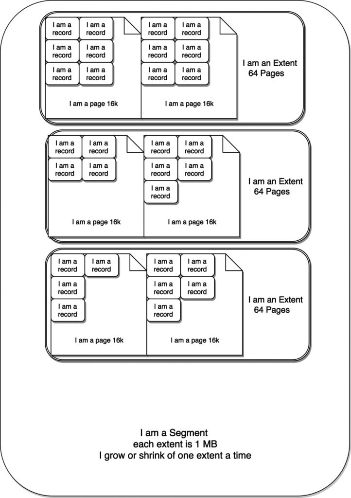
根，分支与叶子
每个页（逻辑上讲即叶子节点）是包含了2-N行数据，根据主键排列。树有着特殊的页区管理不同的分支，即内部节点（INodes）。
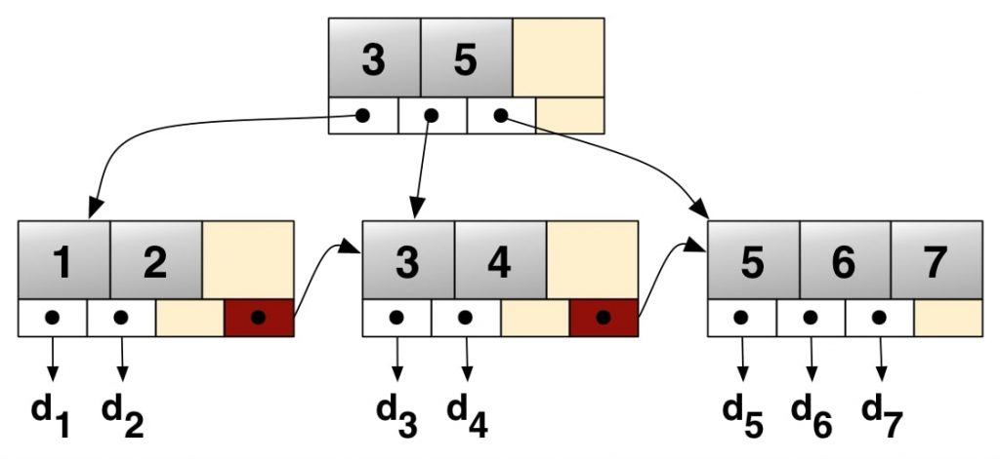 上图仅为示例，后文才是真实的结构描述。
具体来看一下：
ROOT NODE #3: 4 records, 68 bytes
NODE POINTER RECORD ≥ (id=2) → #197
INTERNAL NODE #197: 464 records, 7888 bytes
NODE POINTER RECORD ≥ (id=2) → #5
LEAF NODE #5: 57 records, 7524 bytes
RECORD: (id=2) → (uuid="884e471c-0e82-11e7-8bf6-08002734ed50", millid=139, kwatts_s=1956, date="2017-05-01", location="For beauty's pattern to succeeding men.Yet do thy", active=1, time="2017-03-21 22:05:45", strrecordtype="Wit")
下面是表结构：
CREATE TABLE `wmills` (
`id` bigint(11) NOT NULL AUTO_INCREMENT,
`uuid` char(36) COLLATE utf8_bin NOT NULL,
`millid` smallint(6) NOT NULL,
`kwatts_s` int(11) NOT NULL,
`date` date NOT NULL,
`location` varchar(50) COLLATE utf8_bin DEFAULT NULL,
`active` tinyint(2) NOT NULL DEFAULT '1',
`time` timestamp NOT NULL DEFAULT CURRENT_TIMESTAMP ON UPDATE CURRENT_TIMESTAMP,
`strrecordtype` char(3) COLLATE utf8_bin NOT NULL,
PRIMARY KEY (`id`),
KEY `IDX_millid` (`millid`)
) ENGINE=InnoDB;
所有的B树都有着一个入口，也就是根节点，在上图中#3就是根节点。根节点（页）包含了如索引ID、INodes数量等信息。INode页包含了关于页本身的信息、值的范围等。最后还有叶子节点，也就是我们数据实际所在的位置。在示例中，我们可以看到叶子节点#5有57行记录，共7524 bytes。在这行信息后是具体的记录，可以看到数据行内容。
这里想引出的概念是当你使用InnoDB管理表和行，InnoDB会将他们会以分支、页和记录的形式组织起来。InnoDB不是按行的来操作的，它可操作的最小粒度是页，页加载进内存后才会通过扫描页来获取行/记录。
现在页的结构清楚了吗？好，我们继续。
页的内部原理
页可以空或者填充满（100%），行记录会按照主键顺序来排列。例如在使用AUTO_INCREMENT时，你会有顺序的ID 1、2、3、4等。
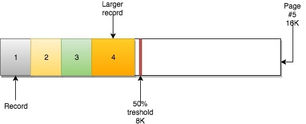
页还有另一个重要的属性：MERGE_THRESHOLD。该参数的默认值是50%页的大小，它在InnoDB的合并操作中扮演了很重要的角色。
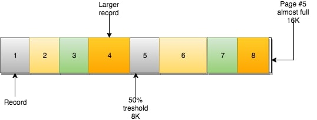 当你插入数据时，如果数据（大小）能够放的进页中的话，那他们是按顺序将页填满的。
若当前页满，则下一行记录会被插入下一页（NEXT）中。
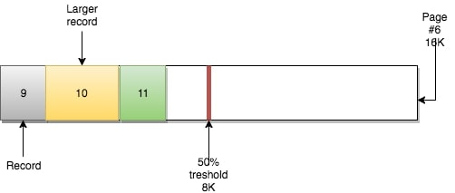 根据B树的特性，它可以自顶向下遍历，但也可以在各叶子节点水平遍历。因为每个叶子节点都有着一个指向包含下一条（顺序）记录的页的指针。
例如，页#5有指向页#6的指针，页#6有指向前一页（#5）的指针和后一页（#7）的指针。
这种机制下可以做到快速的顺序扫描（如范围扫描）。之前提到过，这就是当你基于自增主键进行插入的情况。但如果你不仅插入还进行删除呢？
页合并
当你删了一行记录时，实际上记录并没有被物理删除，记录被标记（flaged）为删除并且它的空间变得允许被其他记录声明使用。
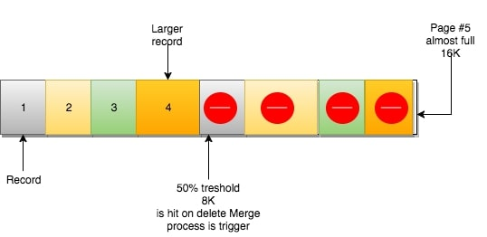
当页中删除的记录达到MERGE_THRESHOLD（默认页体积的50%），InnoDB会开始寻找最靠近的页（前或后）看看是否可以将两个页合并以优化空间使用。
在示例中，页#6使用了不到一半的空间，页#5又有足够的删除数量，现在同样处于50%使用以下。从InnoDB的角度来看，它们能够进行合并。
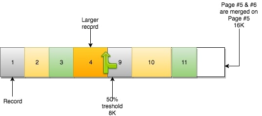 合并操作使得页#5保留它之前的数据，并且容纳来自页#6的数据。页#6变成一个空页，可以接纳新数据。
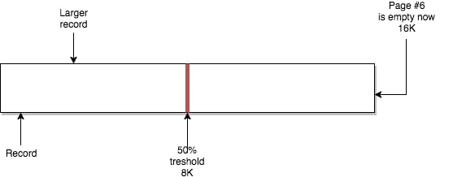 如果我们在UPDATE操作中让页中数据体积达到类似的阈值点，InnoDB也会进行一样的操作。
规则就是：页合并发生在删除或更新操作中，关联到当前页的相邻页。如果页合并成功，在INFOMATION_SCHEMA.INNODB_METRICS中的index_page_merge_successful将会增加。
页分裂
前面提到，页可能填充至100%，在页填满了之后，下一页会继续接管新的记录。但如果有下面这种情况呢？
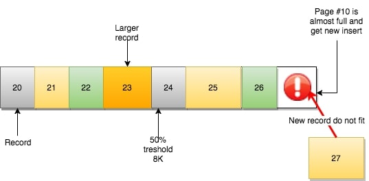 页#10没有足够空间去容纳新（或更新）的记录。根据“下一页”的逻辑，记录应该由页#11负责。然而：
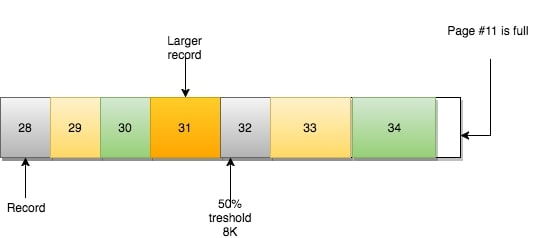 页#11也同样满了，数据也不可能不按顺序地插入。怎么办？
还记得之前说的链表吗（译注：指B+树的每一层都是双向链表）？页#10有指向页#9和页#11的指针。
InnoDB的做法是（简化版）：
- 创建新页
- 判断当前页（页#10）可以从哪里进行分裂（记录行层面）
- 移动记录行
- 重新定义页之间的关系
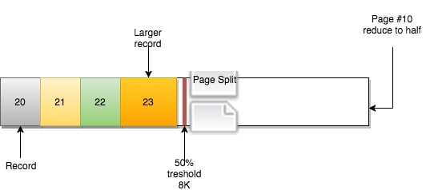 新的页#12被创建：
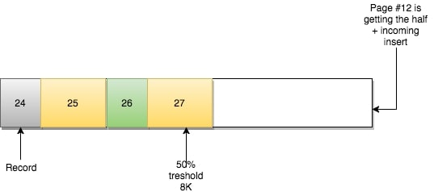 页#11保持原样，只有页之间的关系发生了改变：
- 页#10相邻的前一页为页#9，后一页为页#12
- 页#12相邻的前一页为页#10，后一页为页#11
- 页#11相邻的前一页为页#10，后一页为页#13
（译注：页#13可能本来就有，这里意思为页#10与页#11之间插入了页#12）
这样B树水平方向的一致性仍然满足，因为满足原定的顺序排列逻辑。然而从物理存储上讲页是乱序的，而且大概率会落到不同的区。
规律总结：页分裂会发生在插入或更新，并且造成页的错位（dislocation，落入不同的区）
InnoDB用INFORMATION_SCHEMA.INNODB_METRICS表来跟踪页的分裂数。可以查看其中的index_page_splits和index_page_reorg_attempts/successful统计。
一旦创建分裂的页，唯一（译注：实则仍有其他方法，见下文）将原先顺序恢复的办法就是新分裂出来的页因为低于合并阈值（merge threshold）被删掉。这时候InnoDB用页合并将数据合并回来。
另一种方式就是用OPTIMIZE重新整理表。这可能是个很重量级和耗时的过程，但可能是唯一将大量分布在不同区的页理顺的方法。
另一方面，要记住在合并和分裂的过程，InnoDB会在索引树上加写锁（x-latch）。在操作频繁的系统中这可能会是个隐患。它可能会导致索引的锁争用（index latch contention）。如果表中没有合并和分裂（也就是写操作）的操作，称为“乐观”更新，只需要使用读锁（S）。带有合并也分裂操作则称为“悲观”更新，使用写锁（X）。
我的主键
好的主键不仅对于数据查找很重要，而且也影响写操作时数据在区上的分布（也就是与页分裂和页合并操作相关）。
在第一个测试中我使用的是是自增主键，第二个测试主键是基于一个1-200的ID与自增值的，第三个测试也是1-200的ID不过与UUID联合。
插入操作时，InnoDB需要增加页，视为“分裂”操作：
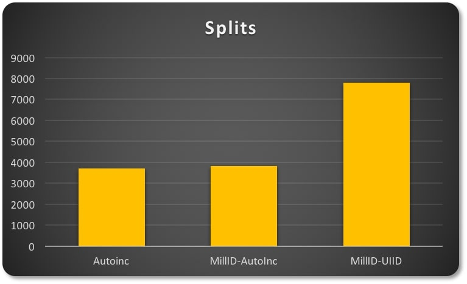 表现因不同主键而异。
在头两种情况中数据的分布更为紧凑，也就是说他们拥有更好的空间利用率。对比半随机（semi-random）特性的UUID会导致明显的页稀疏分布（页数量更多，相关分裂操作更多）。
在页合并的情况中，尝试合并的次数因主键类型的不同而表现得更加不一致。
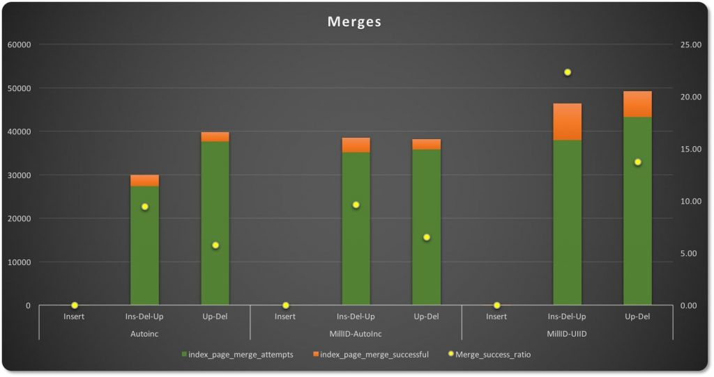 在插入-更新-删除操作中，自增主键有更少的合并尝试次数，成功比例比其他两种类型低9.45%。UUID型主键（图表的右一侧）有更多的合并尝试，但是合并成功率明显更高，达22.34%，因为数据稀疏分布让很多页都有部分空闲空间。
在辅助索引与上面主键索引相似的情况下，测试的表现也是类似的。
总结
MySQL/InnoDB不断地进行这些操作，你可能只能了解到很少的信息。但他们可能给你造成伤害，特别是比起用SSD，你还在用传统的机械存储（spindle storage）的时候（顺便提一下SSD会有另外的问题）。
坏消息就是我们用什么参数或者魔法去改变服务端。但好消息是我们可以在设计的时候做很多（有帮助）的事。
恰当地使用主键和设计辅助索引，并且记住不要滥用（索引）。如果你已经预计到会有很多插入/删除/更新操作，规划一个合适的时间窗来管理（整理）表。
有个很重要的点，InnoDB中你不会有断断续续的行记录，但是你会在页-区的维度上遇到这些问题。忽略表的管理工作会导致需要在IO层面、内存层面和InnoDB缓冲池层面做更多工作。
你必须不时（at regular intervals）重建一些表。可以采用一些技巧，比如分区和外部的工具（pt-osc）。不要让表变得过大和过于碎片化（fragmented）。
磁盘空间浪费？需要读多个表去获取需要的数据而不是一次搞定？每次搜索导致明显更多的读操作？那是你的锅，不要找借口！
Happy MySQL to everyone!
感谢
Laurynas Biveinis: 感谢花时间向我解释一些内部实现。
Jeremy Cole: 感谢他的项目InnoDB_ruby (我经常用上）。